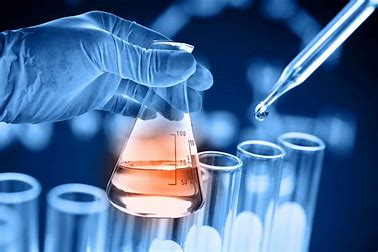
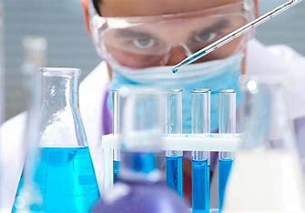
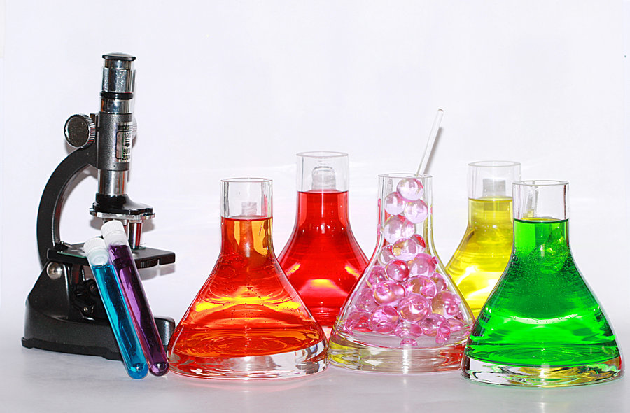
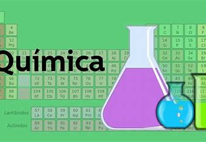

La quìmica ha ido evolucionando a travès del tiempo, investiga los cambios y transformaciones de la materia. La química es la ciencia natural que estudia la composición, estructura y propiedades de la materia, ya sea en forma de elementos, especies, compuestos, mezclas u otras sustancias, así como los cambios que estas experimentan durante las reacciones y su relación con la energía química.


durante el paso de los años, han sucedidos varios avances
revolucionarios en el àrea de la quìmica, uno de ellos es la
tabla periòdica, un sistema bastante importante donde se
encuentran todos los elementos quimicos descubiertos.
otro de los grandes logros de la quìmica fue la pasteurizaciòn.
Desarrollada por Louis Pasteur en el siglo XIX, la pasteurización
es un proceso que mata las bacterias en los alimentos y bebidas a
través de procesos térmicos de al menos 80 grados centígrados.


QUÌMICA
Paola del Carmen Uvalle Chan